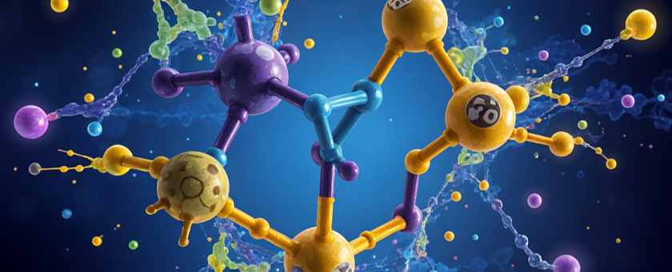

Phenylalanine: Understanding Its Role in Aspartame and Health Risks
Exploring how phenylalanine, an amino acid found in aspartame, affects health and who should be cautious.
What Is Phenylalanine?
Phenylalanine is a naturally occurring amino acid found in various protein-rich foods, and it also plays a crucial role in the artificial sweetener aspartame. While for many people phenylalanine is harmless and even necessary for bodily functions, it poses significant health concerns for individuals with a rare genetic disorder called phenylketonuria (PKU). This blog post will explore what phenylalanine is, how it relates to aspartame, and why it is important to understand the potential risks.
Phenylalanine is an essential amino acid, meaning it cannot be produced by the body and must be obtained through diet. It comes in two forms:
- L-Phenylalanine: This is the natural form found in many protein-rich foods such as meat, fish, eggs, dairy, soy, and nuts. It is used by the body to make proteins and is crucial in the production of tyrosine, another amino acid that helps create important neurotransmitters like dopamine and norepinephrine, which are essential for mood regulation and cognitive function.
- D-Phenylalanine: This is a synthetic version often used in medical treatments for its potential pain-relieving properties.
In aspartame, phenylalanine is present as a component. Aspartame is broken down in the body into phenylalanine, methanol, and aspartic acid. For most people, these by-products are harmless at typical consumption levels. However, for certain individuals, phenylalanine can present serious health risks.
Phenylketonuria (PKU) and Phenylalanine Sensitivity
Phenylketonuria (PKU) is a rare inherited disorder that affects the body's ability to metabolize phenylalanine. Individuals with PKU lack the enzyme necessary to properly break down phenylalanine, causing it to build up to toxic levels in the blood and brain. High phenylalanine levels can lead to severe neurological complications, including intellectual disability, brain damage, and seizures if not properly managed.
Because aspartame contains phenylalanine, individuals with PKU must avoid it entirely. This is why products containing aspartame have a clear warning label advising people with PKU not to consume them. Even for individuals without PKU, excessive consumption of phenylalanine might contribute to health issues like anxiety, headaches, and potential neurological effects, although the evidence is less clear.
The Role of Phenylalanine in Aspartame
Aspartame is widely used in sugar-free and diet products like sodas, yogurts, and chewing gum. It is made up of approximately 50% phenylalanine, 40% aspartic acid, and 10% methanol. When consumed, aspartame breaks down into these components, with phenylalanine playing a role in how the body responds to the sweetener. In people with normal phenylalanine metabolism, these by-products are typically broken down and excreted without issue.
However, it is important to understand that phenylalanine can cross the blood-brain barrier and affect neurotransmitter production. This is particularly relevant for individuals who may be prone to anxiety or other mood disorders, as high levels of phenylalanine can potentially interfere with normal brain function.
Why Awareness Matters
While phenylalanine is not inherently harmful for the majority of the population, awareness is crucial. For individuals with PKU, consuming even small amounts of phenylalanine can lead to severe health consequences. Additionally, there is ongoing research into how excessive consumption of aspartame—and thus phenylalanine—might affect those with conditions like anxiety, depression, or other neurological sensitivities.
Ensuring that individuals understand what phenylalanine is and how it is related to aspartame can help people make more informed dietary choices, especially if they are prone to certain health issues. If you are concerned about your consumption of aspartame or phenylalanine, consider consulting a healthcare provider and exploring natural alternatives like stevia, monk fruit, or raw honey.
Conclusion
Phenylalanine plays an essential role in our bodies and is a critical component of the artificial sweetener aspartame. However, for individuals with phenylketonuria (PKU) or other sensitivities, phenylalanine can pose significant health risks. Understanding how phenylalanine functions and its implications in aspartame consumption is key to making informed decisions about your diet and health. Always read labels carefully, especially if you or someone you know has PKU or is sensitive to artificial additives.
References
- National Institutes of Health (NIH). "Phenylketonuria (PKU): Overview." NIH Website
- Food and Drug Administration (FDA). "Additional Information about High-Intensity Sweeteners." FDA Website
- American Journal of Clinical Nutrition. "Phenylalanine Metabolism and Dietary Implications." American Journal of Clinical Nutrition
- International Agency for Research on Cancer (IARC). "Aspartame and Carcinogenicity." IARC Website